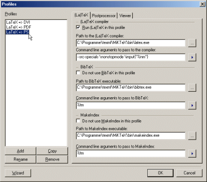

The tab '(La)TeX' allows to define:
- which LaTeX or TeX compiler to use;
- which BibTeX compiler to use;
- which MakeIndex compiler to use.

The meaning of the different controls:
- 'Run (La)TeX in this profile'
- Choose this option, if the specified (La)TeX compiler should
be called when building output with this output profile.
- 'Path to the (La)TeX compiler'
- Specify the full path of the (La)TeX compiler to use in this profile.
- 'Command line arguments to pass to the compiler'
- Specify the command line to pass to the (La)TeX compiler. Use
place holders for dynamic arguments.
- 'Do not use BibTeX in this profile'
- Choose this option, to prevent BibTeX from being started, when using
this profile. If this option is not checked, BibTeX will start or not
depending on the project settings.
- 'Path to the BibTeX compiler'
- Specify the full path of the BibTeX compiler to use in this profile.
- 'Command line arguments to pass to the compiler'
- Specify the command line arguments to pass to the BibTeX compiler.
Use place holders for dynamic arguments.
- 'Do not use MakeIndex in this profile'
- Choose this option, to prevent MakeIndex from being started, when using
this profile. If this option is not checked, MakeIndex will started or not
depending on the project settings.
- 'Path to the MakeIndex compiler'
- Specify the full path of the MakeIndex compiler to use in this profile.
- 'Command line arguments to pass to the compiler'
- Specify the command line arguments to pass to the MakeIndex compiler.
Use place holders for dynamic arguments.